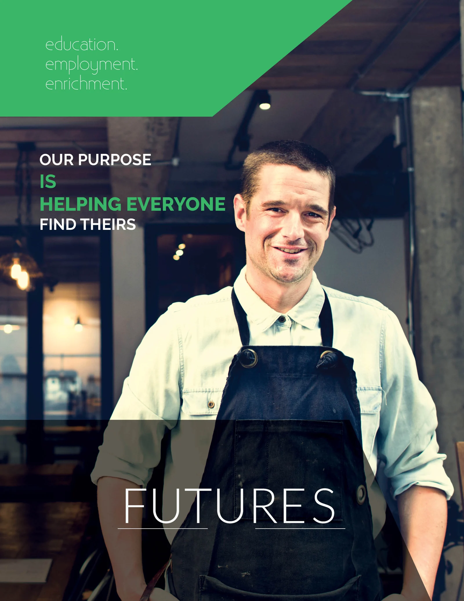
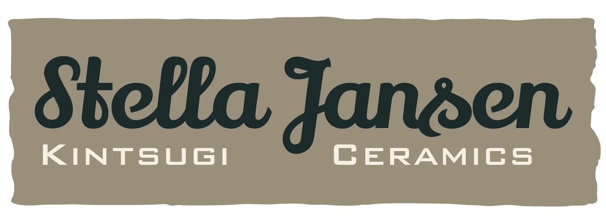
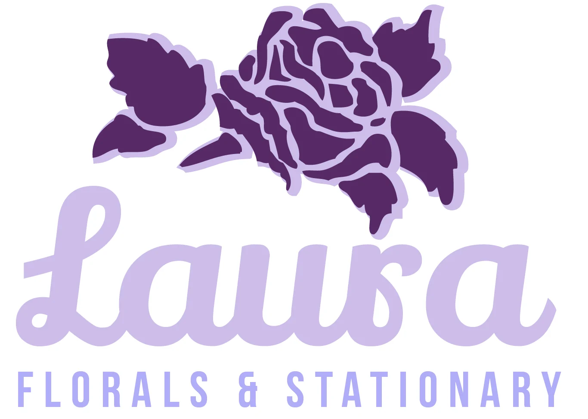

Brand strategy, collateral, stakeholder alignment, and launch communications for an education, enrichment, and employment initiative.
SELECTED CREATIVE WORK
Design, brand storytelling, and the leadership that brings the work together.
Explore selected workTHE WORK
Explore the visual work and the thinking behind it—from brand foundations to the details of production.

Brand strategy, collateral, stakeholder alignment, and launch communications for an education, enrichment, and employment initiative.
An editorial proof built around bold typography, image sequencing, and an expressive red, black, and white visual system.
 Explore project
Explore projectA skincare design exploration combining product imagery, visual hierarchy, typography, and existing brand assets.




A selection of identity explorations across fitness, photography, food, craft, and community businesses.
 Explore project
Explore projectA portrait series connecting a creative business with the person, color, and personality behind it.
 Explore project
Explore projectSelected photographs of creative practice, material detail, and the environments where ideas become tangible.
HOW THE WORK HAPPENS
Strong work needs clear direction and room for people to contribute. I connect the brief, the contributors, and the decisions that move a project forward.
Understand the audience, business purpose, constraints, and stakeholders. Turn ambiguity into a brief with clear deliverables and owners.
Bring design, copy, imagery, and production together. Make concepts tangible enough for useful feedback.
Consolidate reviews, resolve conflicting input, protect brand consistency, and make scope and resource tradeoffs visible.
Check quality, organize assets, document the handoff, and support the people using the work after launch.
BEHIND THE WORK
I bring hands-on design and technical depth together with project leadership, stakeholder alignment, and change management. My experience spans creative production, brand communications, higher education, healthcare, and complex business operations.
I’m comfortable moving between a design detail, a production problem, an executive decision, and a team that needs help getting unstuck. The responsibility is to understand the problem and carry the work through.